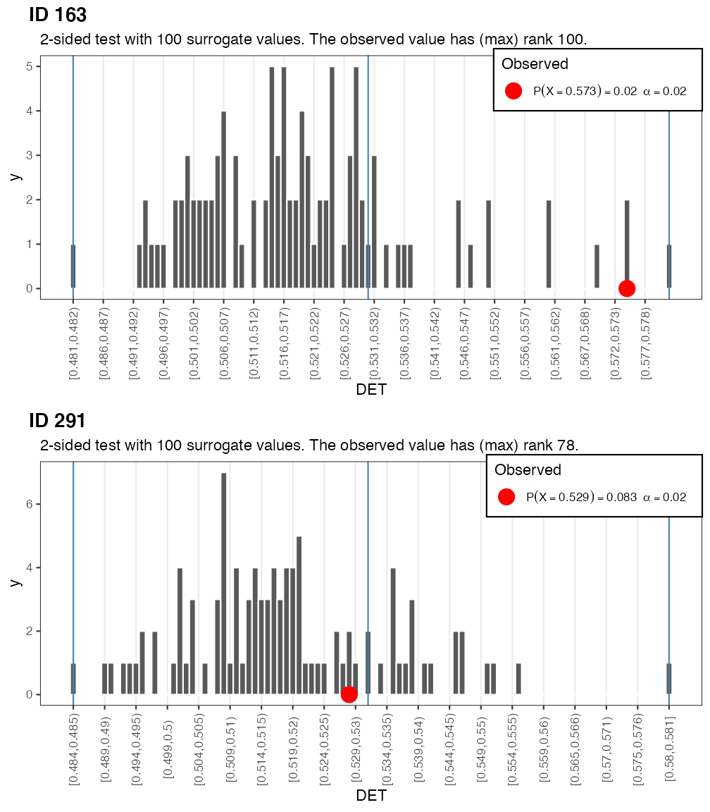
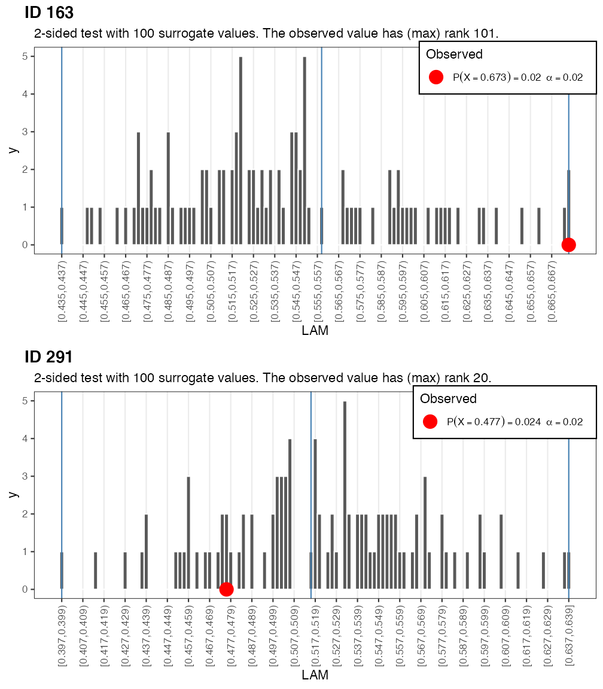

vignettes/CRQA.Rmd
CRQA.RmdThere are 2 main ways to run CRQA in casnet:
rp, rp_measures and rp_plot
rp_cl which will run Norbert Marwan’s commandline Recurrence Plots
The following example will use the native casnet functions, see the paragraph An R interface to Marwan’s commandline recurrence plots to learn about using rp_cl().
We’ll use data from @oomens2015 in which 242 students were asked to generate random sequences of 100 numbers between 1 and 9 (for details see the article).
library(casnet)
library(ggplot2)
# Load the random number sequence data from Oomens et al. (2015)
data(RNG)
# Select a subject
IDs <- RNG$ID%in%c(163,291)
# Look at the sequence
ggplot(RNG[IDs,],aes(x=time,y=number,group=ID)) +
geom_line(aes(colour=ID))+
facet_grid(~ID) +
scale_y_continuous(breaks = 1:9) +
ggtitle("Which of these number sequences is more 'random'?") +
theme_bw()In order to answer the question in the Figure title, we’ll run a Recurrence Quantification Analysis.
The data are unordered categorical, that is, the differences between the integers are meaningless in the context of generating random number sequences. This means the RQA parameters can be set to quantify recurrences of the same value:
In the code block below the functions rp(), rp_measures() and rp_plot() are used to perform RQA on 2 participants in the dataset.
# Run the RQA analysis
y_1 <- RNG$number[RNG$ID==163]
y_2 <- RNG$number[RNG$ID==291]
## Plot the recurrence matrix
# Get the recurrence matrix
rp_1 <- rp(y1=y_1, emDim = 1, emLag = 1, emRad = 1)
rp_2 <- rp(y1=y_2, emDim = 1, emLag = 1, emRad = 1)
# Get the plots
g_1 <- rp_plot(rp_1, plotDimensions = TRUE, returnOnlyObject = TRUE, title = "ID 163")
g_2 <- rp_plot(rp_2, plotDimensions = TRUE, returnOnlyObject = TRUE, title = "ID 291")
# Get the RQA measures, using silent = FALSE will produce output in the console.
crqa_1 <- rp_measures(rp_1, silent = FALSE)>
> ~~~o~~o~~casnet~~o~~o~~~
>
> Global Measures
> Global Max.rec.points N.rec.points Recurrence.Rate Singular.points
> 1 Recurrence Matrix 9900 3104 0.3135354 1324
> Divergence Repetitiveness Anisotropy
> 1 0.1111111 1.174157 1
>
>
> Line-based Measures
> Line.based N.lines N.points.on.lines Measure Rate Mean Max
> 1 Diagonal 668 1780 Determinism 0.5734536 2.664671 9
> 2 Vertical 959 2090 V Laminarity 0.6733247 2.179353 3
> 3 Horizontal 959 2090 H Laminarity 0.6733247 2.179353 3
> Entropy.of.lengths Relative.entropy CoV.of.lengths
> 1 1.1141896 0.2424724 0.3923046
> 2 0.4704117 0.1023720 0.1761294
> 3 0.4704117 0.1023720 0.1761294
>
> ~~~o~~o~~casnet~~o~~o~~~
crqa_2 <- rp_measures(rp_2, silent = FALSE)>
> ~~~o~~o~~casnet~~o~~o~~~
>
> Global Measures
> Global Max.rec.points N.rec.points Recurrence.Rate Singular.points
> 1 Recurrence Matrix 9900 3094 0.3125253 1456
> Divergence Repetitiveness Anisotropy
> 1 0.1428571 0.9010989 1
>
>
> Line-based Measures
> Line.based N.lines N.points.on.lines Measure Rate Mean Max
> 1 Diagonal 668 1638 Determinism 0.5294118 2.452096 7
> 2 Vertical 682 1476 V Laminarity 0.4770524 2.164223 3
> 3 Horizontal 682 1476 H Laminarity 0.4770524 2.164223 3
> Entropy.of.lengths Relative.entropy CoV.of.lengths
> 1 0.8901225 0.19371040 0.3195282
> 2 0.4466065 0.09719148 0.1713084
> 3 0.4466065 0.09719148 0.1713084
>
> ~~~o~~o~~casnet~~o~~o~~~
# Using rp_cl() would look very similar:
# rp_1 <- rp_cl(y1 = y_1, emDim = 1, emLag = 1, emRad= 1)
# rp_2 <- rp_cl(y1 = y_2, emDim = 1, emLag = 1, emRad= 1)The output from rp_measures() is structured into Global and Line-based measures. In addition to information about the matrix size and number of points global measures are provided such as the Recurrence Rate (RR), the number of points that do not form a line (Singular Points) the Divergence (1 / the longest line structure) the average Repetitiveness (proportion of horizontal and vertical lines on the number of diagonal lines). The idea is to quantify how much of the deterministic structure (line structures) is due to repeating the same values (i.e., the horizontal and vertical lines, Laminarity). Finally the Anisotropy quantifies the symmetry of line structures in the plot by taking the ratio of he number of vertical lines over the numbers of horizontal lines in the plot. This should be 1 for Auto-RQA.
The Line-based output is a table listing the statistics for diagonal, vertical and horizontal lines (mean length, max length, rate, entropy of the distribution of line lengths and the same entropy but relative to the number of possible recurrent points and the coefficient of variation of line lengths).
The actual output object is a dataframe (which has more output fields, see the manual pages), the table output to the console is added as attribute measuresTable,
Below the data and plots are rearranged for ease of comparison.
# The RQA measures
cbind.data.frame(subj163=t(crqa_1), subj291=t(crqa_1))> 1 1
> emRad 1.0000000 1.0000000
> RP_N 3104.0000000 3104.0000000
> RR 0.3135354 0.3135354
> SING_N 1324.0000000 1324.0000000
> SING_rate 0.4265464 0.4265464
> DIV_dl 0.1111111 0.1111111
> REP_av 1.1741573 1.1741573
> ANI 1.0000000 1.0000000
> N_dl 668.0000000 668.0000000
> N_dlp 1780.0000000 1780.0000000
> DET 0.5734536 0.5734536
> MEAN_dl 2.6646707 2.6646707
> MAX_dl 9.0000000 9.0000000
> ENT_dl 1.1141896 1.1141896
> ENTrel_dl 0.2424724 0.2424724
> CoV_dl 0.3923046 0.3923046
> N_vl 959.0000000 959.0000000
> N_vlp 2090.0000000 2090.0000000
> LAM_vl 0.6733247 0.6733247
> TT_vl 2.1793535 2.1793535
> MAX_vl 3.0000000 3.0000000
> ENT_vl 0.4704117 0.4704117
> ENTrel_vl 0.1023720 0.1023720
> CoV_vl 0.1761294 0.1761294
> REP_vl 1.1741573 1.1741573
> N_hlp 2090.0000000 2090.0000000
> N_hl 959.0000000 959.0000000
> LAM_hl 0.6733247 0.6733247
> TT_hl 2.1793535 2.1793535
> MAX_hl 3.0000000 3.0000000
> ENT_hl 0.4704117 0.4704117
> ENTrel_hl 0.1023720 0.1023720
> CoV_hl 0.1761294 0.1761294
> REP_hl 1.1741573 1.1741573
# The tables are stored in an attribute
attr(crqa_1,"measuresTable")> $`Global Measures`
> Global Max.rec.points N.rec.points Recurrence.Rate Singular.points
> 1 Recurrence Matrix 9900 3104 0.3135354 1324
> Divergence Repetitiveness Anisotropy
> 1 0.1111111 1.174157 1
>
> $`Line-based Measures`
> Line.based N.lines N.points.on.lines Measure Rate Mean Max
> 1 Diagonal 668 1780 Determinism 0.5734536 2.664671 9
> 2 Vertical 959 2090 V Laminarity 0.6733247 2.179353 3
> 3 Horizontal 959 2090 H Laminarity 0.6733247 2.179353 3
> Entropy.of.lengths Relative.entropy CoV.of.lengths
> 1 1.1141896 0.2424724 0.3923046
> 2 0.4704117 0.1023720 0.1761294
> 3 0.4704117 0.1023720 0.1761294
attr(crqa_2,"measuresTable")> $`Global Measures`
> Global Max.rec.points N.rec.points Recurrence.Rate Singular.points
> 1 Recurrence Matrix 9900 3094 0.3125253 1456
> Divergence Repetitiveness Anisotropy
> 1 0.1428571 0.9010989 1
>
> $`Line-based Measures`
> Line.based N.lines N.points.on.lines Measure Rate Mean Max
> 1 Diagonal 668 1638 Determinism 0.5294118 2.452096 7
> 2 Vertical 682 1476 V Laminarity 0.4770524 2.164223 3
> 3 Horizontal 682 1476 H Laminarity 0.4770524 2.164223 3
> Entropy.of.lengths Relative.entropy CoV.of.lengths
> 1 0.8901225 0.19371040 0.3195282
> 2 0.4466065 0.09719148 0.1713084
> 3 0.4466065 0.09719148 0.1713084The sequence generated by participant 163 has a higher DETerminism (DET = .40) than the sequence by particpant 291 (DET = .19). The ratio of points on a diagonal line to the total number of recurrent point also quantifies this difference (DET_RR). Also interesting to note, both participants have a LAMinarity score of 0. This implies they avoided to produce patterns in which the exact same numbers were repeated in succession. This is a tell-tale sign of the non-random origins of these sequences.
A simple strategy to get some more certainty about the differences between the two sequences is to randomise the observed series, thus removing any temporal correlations that might give rise to recurring patterns in the sequences and re-run the RQA. If the repeated patterns generated by participant 163 are non-random one would expect the DETerminism to drop. If they do not drop this could indicate some random autoregressive process is causing apparent deterministic temporal patterns.
# Reproduce the same randomisation
set.seed(123456789)
# Randomise the number sequences
y_1rnd <- y_1[sample(1:NROW(y_1),size = NROW(y_1))]
y_2rnd <- y_2[sample(1:NROW(y_2),size = NROW(y_2))]
# Create the recurrence matrix
rp_1rnd <- rp(y1=y_1rnd, emDim = 1, emLag = 1,emRad = 1)
rp_2rnd <- rp(y1=y_2rnd, emDim = 1, emLag = 1,emRad = 1)
# Get the RPs
g_1rnd <- rp_plot(rp_1rnd, plotDimensions = TRUE, returnOnlyObject = TRUE, title = "ID 163 shuffled")
g_2rnd <- rp_plot(rp_2rnd, plotDimensions = TRUE, returnOnlyObject = TRUE, title = "ID 291 shuffled")
# Get CRQA measures
crqa_1rnd <- rp_measures(rp_1rnd, silent = FALSE)>
> ~~~o~~o~~casnet~~o~~o~~~
>
> Global Measures
> Global Max.rec.points N.rec.points Recurrence.Rate Singular.points
> 1 Recurrence Matrix 9900 3104 0.3135354 1474
> Divergence Repetitiveness Anisotropy
> 1 0.1666667 1.142945 1
>
>
> Line-based Measures
> Line.based N.lines N.points.on.lines Measure Rate Mean Max
> 1 Diagonal 652 1630 Determinism 0.5251289 2.500000 6
> 2 Vertical 673 1863 V Laminarity 0.6001933 2.768202 6
> 3 Horizontal 673 1863 H Laminarity 0.6001933 2.768202 6
> Entropy.of.lengths Relative.entropy CoV.of.lengths
> 1 0.9496474 0.2066643 0.3299676
> 2 1.1353416 0.2470755 0.3826106
> 3 1.1353416 0.2470755 0.3826106
>
> ~~~o~~o~~casnet~~o~~o~~~
crqa_2rnd <- rp_measures(rp_2rnd, silent = FALSE)>
> ~~~o~~o~~casnet~~o~~o~~~
>
> Global Measures
> Global Max.rec.points N.rec.points Recurrence.Rate Singular.points
> 1 Recurrence Matrix 9900 3094 0.3125253 1524
> Divergence Repetitiveness Anisotropy
> 1 0.1666667 1.007643 1
>
>
> Line-based Measures
> Line.based N.lines N.points.on.lines Measure Rate Mean Max
> 1 Diagonal 652 1570 Determinism 0.5074337 2.407975 6
> 2 Vertical 680 1582 V Laminarity 0.5113122 2.326471 4
> 3 Horizontal 680 1582 H Laminarity 0.5113122 2.326471 4
> Entropy.of.lengths Relative.entropy CoV.of.lengths
> 1 0.8384475 0.1824648 0.3094559
> 2 0.7212808 0.1569667 0.2542265
> 3 0.7212808 0.1569667 0.2542265
>
> ~~~o~~o~~casnet~~o~~o~~~
# Display recurrence plots
cowplot::plot_grid(g_1rnd, g_2rnd, align = "h")
# Display the RQA measures for ID 163
cbind.data.frame(subj163=t(crqa_1), subj163rnd=t(crqa_1rnd))> 1 1
> emRad 1.0000000 1.0000000
> RP_N 3104.0000000 3104.0000000
> RR 0.3135354 0.3135354
> SING_N 1324.0000000 1474.0000000
> SING_rate 0.4265464 0.4748711
> DIV_dl 0.1111111 0.1666667
> REP_av 1.1741573 1.1429448
> ANI 1.0000000 1.0000000
> N_dl 668.0000000 652.0000000
> N_dlp 1780.0000000 1630.0000000
> DET 0.5734536 0.5251289
> MEAN_dl 2.6646707 2.5000000
> MAX_dl 9.0000000 6.0000000
> ENT_dl 1.1141896 0.9496474
> ENTrel_dl 0.2424724 0.2066643
> CoV_dl 0.3923046 0.3299676
> N_vl 959.0000000 673.0000000
> N_vlp 2090.0000000 1863.0000000
> LAM_vl 0.6733247 0.6001933
> TT_vl 2.1793535 2.7682021
> MAX_vl 3.0000000 6.0000000
> ENT_vl 0.4704117 1.1353416
> ENTrel_vl 0.1023720 0.2470755
> CoV_vl 0.1761294 0.3826106
> REP_vl 1.1741573 1.1429448
> N_hlp 2090.0000000 1863.0000000
> N_hl 959.0000000 673.0000000
> LAM_hl 0.6733247 0.6001933
> TT_hl 2.1793535 2.7682021
> MAX_hl 3.0000000 6.0000000
> ENT_hl 0.4704117 1.1353416
> ENTrel_hl 0.1023720 0.2470755
> CoV_hl 0.1761294 0.3826106
> REP_hl 1.1741573 1.1429448
# Display the RQA measures for ID 291
cbind.data.frame(subj291=t(crqa_2), subj291rnd=t(crqa_2rnd))> 1 1
> emRad 1.000000e+00 1.0000000
> RP_N 3.094000e+03 3094.0000000
> RR 3.125253e-01 0.3125253
> SING_N 1.456000e+03 1524.0000000
> SING_rate 4.705882e-01 0.4925663
> DIV_dl 1.428571e-01 0.1666667
> REP_av 9.010989e-01 1.0076433
> ANI 1.000000e+00 1.0000000
> N_dl 6.680000e+02 652.0000000
> N_dlp 1.638000e+03 1570.0000000
> DET 5.294118e-01 0.5074337
> MEAN_dl 2.452096e+00 2.4079755
> MAX_dl 7.000000e+00 6.0000000
> ENT_dl 8.901225e-01 0.8384475
> ENTrel_dl 1.937104e-01 0.1824648
> CoV_dl 3.195282e-01 0.3094559
> N_vl 6.820000e+02 680.0000000
> N_vlp 1.476000e+03 1582.0000000
> LAM_vl 4.770524e-01 0.5113122
> TT_vl 2.164223e+00 2.3264706
> MAX_vl 3.000000e+00 4.0000000
> ENT_vl 4.466065e-01 0.7212808
> ENTrel_vl 9.719148e-02 0.1569667
> CoV_vl 1.713084e-01 0.2542265
> REP_vl 9.010989e-01 1.0076433
> N_hlp 1.476000e+03 1582.0000000
> N_hl 6.820000e+02 680.0000000
> LAM_hl 4.770524e-01 0.5113122
> TT_hl 2.164223e+00 2.3264706
> MAX_hl 3.000000e+00 4.0000000
> ENT_hl 4.466065e-01 0.7212808
> ENTrel_hl 9.719148e-02 0.1569667
> CoV_hl 1.713084e-01 0.2542265
> REP_hl 9.010989e-01 1.0076433Note that the number of recurrent points (RR) does not change whe we shuffle the data. What changes is the number of recurrent points that form line structures in the recurrence plot. Randomising the number sequences causes vertical line structures to appear in the recurrence plot (LAM, V_max, V_entr, TT), this is what we would expect if the data generating process were indeed a random process. Having no such structures means there were hardly any sequences consisting of repetitions of the same number. Participants may have adopted a strategy to avoid such sequences because they erroneously believed this to be a feature of non-random sequences.
In order to get an idea about the meaningfulness of these differences, we can construct a surrogate data test for each participant. If we want a one-sided test with \(\alpha=.05\), the formula for the number of constrained realisations \(M\) we minimally need is: \[M = \frac{1}{\alpha}-1 = 19\]. Add the observed value and we have a sample size of \(N = 20\). For a two sided test we would use \[M = \frac{2}{\alpha}-1 = 39\].
Of course, if there are no computational constraints on generating surrogate time series, we can go much higher, If we want \(N = 100\), the test will be an evaluation of \(H_{0}\) at \(\alpha = .01\).
99 realisations that reflect a test of the hypothesis \(H_{0}: X_i \sim \mathcal{U(1,9)}\) at \(\alpha = .01\).DET
DET value is at the extremes of the distribution of values representing \(H_{0}\), the observed value was probably not generated by drawing from a discrete uniform distribution with finite elements 1 through 9.Use function plorSUR_hist() to get a p-value and plot the distributions. The red dots indicate the observed values.
# Get point estimates for p-values based on rank of observation (discrete distribution)
# 99 = (1 / alpha) - 1
# 99+1 = (1 / alpha)
alpha = 1/100
p_1 <- plotSUR_hist(surrogateValues = crqa_1rnd_sur$DET, observedValue = crqa_1$DET, measureName = "DET", doPlot = FALSE)
p_2 <- plotSUR_hist(surrogateValues = crqa_2rnd_sur$DET, observedValue = crqa_2$DET, measureName = "DET", doPlot = FALSE)
cowplot::plot_grid(p_1$surrogates_plot, p_2$surrogates_plot, labels = c("ID 163","ID 291"), ncol = 1)
To get the full picture, let’s look at those missing repetitions of the same numbers.
# Get point estimates for p-values based on rank of observation (discrete distribution)
# 99 = (1 / alpha) - 1
# 99+1 = (1 / alpha)
alpha = 1/100
p_1 <- plotSUR_hist(surrogateValues = crqa_1rnd_sur$LAM_vl, observedValue = crqa_1$LAM_vl, measureName = "LAM", doPlot = FALSE)
p_2 <- plotSUR_hist(surrogateValues = crqa_2rnd_sur$LAM_vl, observedValue = crqa_2$LAM_vl, measureName = "LAM", doPlot = FALSE)
cowplot::plot_grid(p_1$surrogates_plot, p_2$surrogates_plot, labels = c("ID 163","ID 291"), ncol = 1)
If we were naive to the origin of these number sequences, the results for LAMinarity should make us doubt that they represent indendent draws from a discrete uniform distribution of the type \(X \sim \mathcal{U}(1,9)\). If we had to decide which sequence was more, or, less random, then based on the DETerminism result, we would conclude that participant 163 produced a sequence that is less random than participant 291, the observed value of the former is at the right extreme of a distribution of DET values calculated from 99 realisations of the data constrained by \(H_0\).
IMPORTANT: Currently
rp_clcan only run on an operating system that allows execution of 32-bit applications!
The rp_cl() function is a wrapper for the commandline Recurrence Plots executable provided by Norbert Marwan.
The rp executable is installed on your machine when the function rp_cl() is called for the first time:
rp from a platform specific file downloaded from the commandline Recurrence Plots site.getOption("casnet.path_to_rp")
If you cannot change the permissions on the folder where rp was downloaded, consider downloading the appropriate executable from the commandline Recurrence Plots site to a directory in which you have such permissions. Then change the path_to_rp option using options(casnet.path_to_rp="YOUR_PATH_TO_RP"). See the manual entry for rp_cl() for more details.
The platform specific rp command line executable files were created by Norbert Marwan and obtained under a Creative Commons License from the website of the Potsdam Institute for Climate Impact Research at: http://tocsy.pik-potsdam.de/
The full copyright statement on the website is as follows:
© 2004-2017 SOME RIGHTS RESERVED
University of Potsdam, Interdisciplinary Center for Dynamics of Complex Systems, Germany
Potsdam Institute for Climate Impact Research, Transdisciplinary Concepts and Methods, Germany
This work is licensed under a Creative Commons Attribution-NonCommercial-NoDerivs 2.0 Germany License.
More information about recurrence quantification analysis can be found on the Recurrence Plot website.